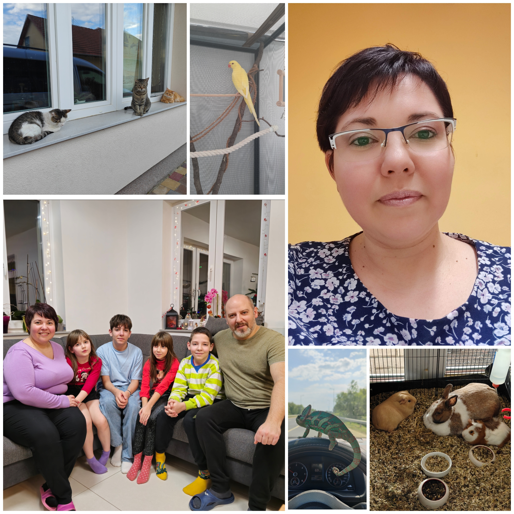

Kistokajban lakok, 44 éves vagyok. Boldog házasságban élek már 15 éve, 4 gyermeket nevelünk. Két fiunk és két lányunk van, akik mindannyian már iskolások. Nagyon szeretem az állatokat. Van 3 cicánk, egy sisakos kaméleonunk, egy kissándor papagájunk, két tengeri malacunk és egy nyuszink. Szabadidőmben, ami nem sok van, szeretek kirándulni, zenét hallgatni és gyémántkirakózni.
Munkámat illetően, 2020. szeptemberétől dolgozom a Miskolci SZC Kandó Kálmán Informatikai Technikumban oktatóként. Jelenleg oktatott tantárgyaim: IKT Projektmunka I. és Munkavállalói ismeretek. Ágazati alapvizsgára készítek fel 9. és 10. évfolyamos tanulókat. Hivatásként tekintek a munkámra, nagyon szeretek serdülőkorú fiatalokkal együtt dolgozni, őket tanítani és beszélgetni velük. Jelenleg egyetemre járok és informatikatanár (digitális kultúra tanára) leszek 2027-ben.
